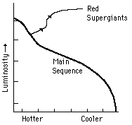

Red Supergiants
A star of 15 solar masses exhausts its hydrogen in about one-thousandth the lifetime of our sun. It proceeds through the red giant phase, but when it
reaches the triple-alpha process of nuclear fusion, it continues to burn for a time and
expands to an even larger volume. The much brighter, but still reddened star is called a red supergiant. Betelgeuse, at the shoulder of Orion, is the best-known example. Absolute luminosities may reach -10 magnitude compared to +5 for our sun.
Some of these supergiants are
unstable and form the very important
Cepheid variables. In their final
stages, supergiants may explode into
supernovae. The collapse of these
massive stars may produce a neutron star or a black hole.
|
 |
|
Index |